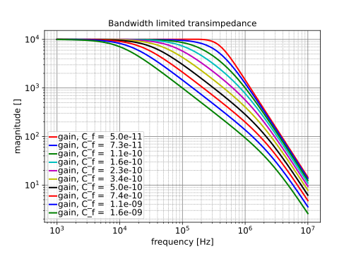
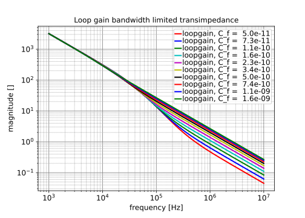

Go to PhZbwLimit_index
SLiCAP: Symbolic Linear Circuit Analysis Program, Version 2.0.1 © 2009-2024 SLiCAP development team
For documentation, examples, support, updates and courses please visit: analog-electronics.tudelft.nl
Last project update: 2024-10-20 16:56:38